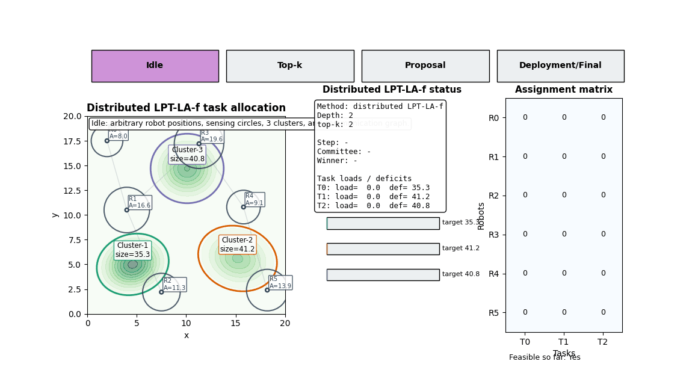

Research
Persistent Monitoring
Selected works on persistent monitoring are grouped in the first two columns.
Source Localization
Odor sensing and animal-in-the-loop videos are grouped in the last two columns.
Voronoi-based Coverage Control for Multi-Robot Systems
We present a Voronoi-based coverage control algorithm for multi-robot systems to achieve optimal area coverage.
Human-Drone Swarm Interaction System for Persistent Monitoring
We present a human-drone swarm interaction system for persistent monitoring of large disperse areas using ergodic coverage control and safety-aware coordination.
BibTeX
@inproceedings{kosonen2025human,
title={Human-Drone Swarm Interaction System for Persistent Monitoring of Large Disperse Area},
author={Kosonen, Petri and Fadaeian, Yeganeh and Eura, Reeta-Mari and Sulameri, Jussi and Fikri, Muhamad Rausyan and Gusrialdi, Azwirman},
booktitle={2025 IEEE 21st International Conference on Automation Science and Engineering (CASE)},
pages={179--184},
year={2025},
organization={IEEE}
}
Design and Experimental Evaluation of Odor Sensing
We present the result of drone tracking of odor trails validated in experiments.
BibTeX
@article{shigaki2018design,
title={Design and experimental evaluation of an odor sensing method for a pocket-sized quadcopter},
author={Shigaki, Shunsuke and Fikri, Muhamad Rausyan and Kurabayashi, Daisuke},
journal={Sensors},
volume={18},
number={11},
pages={3720},
year={2018},
publisher={MDPI}
}
Animal-in-the-Loop
We exhibit a drone controlled by silkworm moth in an animal-in-the-loop experiment.
BibTeX
@article{shigaki2018animal,
title={Animal-in-the-loop system to investigate adaptive behavior},
author={Shigaki, S and Fikri, Muhamad Rausyan and Hernandez Reyes, C and Sakurai, Takeshi and Ando, Noriyasu and Kurabayashi, Daisuke and Kanzaki, Ryohei and Sezutsu, Hideki},
journal={Advanced Robotics},
volume={32},
number={17},
pages={945--953},
year={2018},
publisher={Taylor \& Francis}
}
Optimal Transport
Two optimal transport simulations are shown in the first two columns.
MAPF
A warehouse multi-agent path finding simulation is shown in the last two columns.
Optimal Transport: DDOC + CBF
Simulation result for optimal transport with DDOC and control barrier function.
Optimal Transport: DDOC + Sensing
Simulation result for optimal transport with DDOC and sensing.
Warehouse MAPF Simulation
A sample simulation for multi-agent path finding in a warehouse environment.
Networked Systems
Selected networked systems simulations are collected in one full-width panel.
Networked Systems Simulations
Representative simulations on coordinated formations and distributed networked control.

